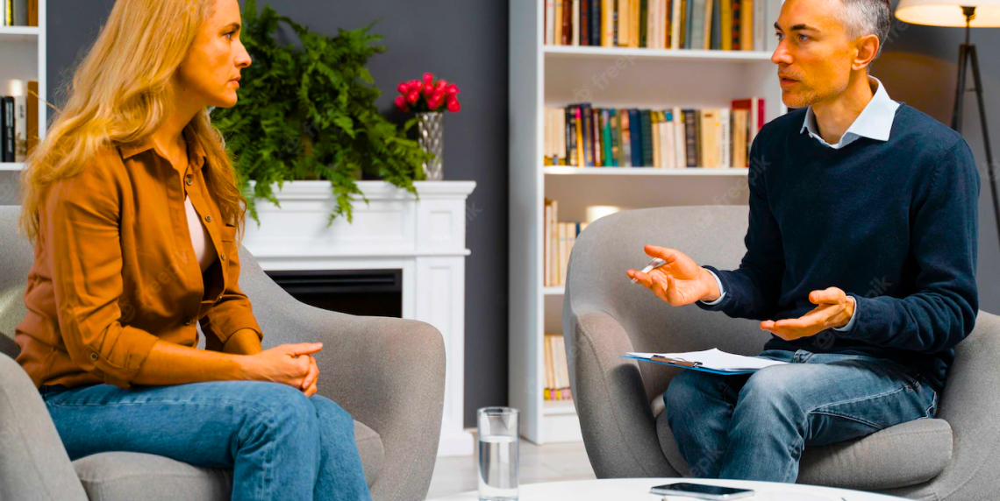

Боротьба з насильством продовжується
Домашнє насильство має багато проявів та форм. В період довгих свят, так само як і в період карантинних обмежень, ситуація з аб’юзом у родині може загострюватися.
Маріупольська Асоціація Жінок Берегиня продовжує роботу з жінками, що опинились у складних життєвих обставинах або потерпають від домашнього насилля. Ми працюємо на місцях – в селищах, що знаходяться на лінії розмежування, також надаємо допомогу та консультації телефоном, онлайн та в офісі.
Випадки насилля не можна замовчувати – це головний меседж, який ми несемо під час зустрічей, семінарів, тренінгів та вебінарів, які ми проводимо для жінок та дівчат. З насильством можна та потрібно боротись.
Жінкам та дівчатам важливо знати, що вони не сам на сам зі своєю бідою, що є кому простягнути їм руку допомоги. Адже дуже важко наважитись розповісти комусь про свій біль. Важко почати діяти, особливо коли не знаєш з чого почати, до кого звернутись. Наші юристи надають повний супровід жінкам та дівчатам, яким потрібна допомога. Також важливими є консультації психологинь, під час яких жінки можуть знайти в собі той ресурс, який допоможе подолати проблему, яка не дає жити повним життям. А консультації нашого лікаря в деяких населених пунктах є единим джерелом медичної допомоги, через відсутність там лікарських пунктів.

Ще одним важливим фактором, завдяки якому у жінки менше шансів потрапити в ситуацію, коли вона повністю залежить від чоловіка-аб’юзера, є економічна незалежність. Саме задля того, щоб дати жінкам можливість заробляти кошти власними вміннями, цього року Маріупольська Асоціація Жінок Берегиня запровадила курси в’язання та шиття. Курси мають дуже гарний відгук від дівчат, які прийняли в них участь.
А як приємно спостерігати за очима, в яких палає вогник натхнення та задоволення від своєї діяльності! Ми знаємо точно, що все, за що беруться жінки і дівчата, з яким співпрацює Маріупольська Асоціація Жінок Берегиня, буде мати успіх. Адже наполегливості та завзятості їм не позичати.